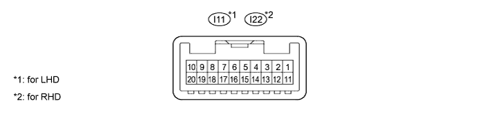
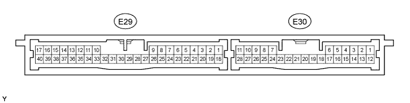
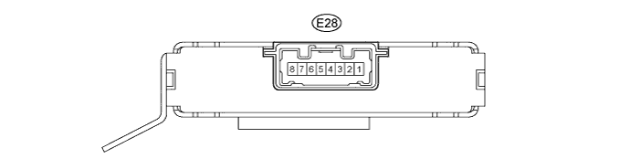
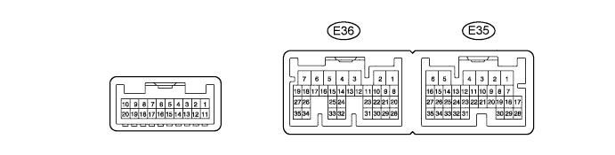
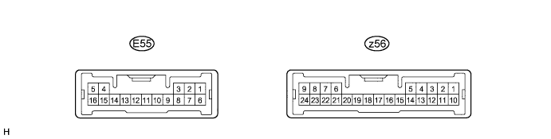

LIN COMMUNICATION SYSTEM > TERMINALS OF ECU |
| CHECK MAIN BODY ECU (COWL SIDE JUNCTION BLOCK LH) |

Disconnect the 2D, E1, E2 and E3 ECU connectors.
Measure the resistance and voltage according to the value(s) in the table below.
| Terminal No. (Symbol) | Wiring Color | Terminal Description | Condition | Specified Condition |
| 2D-62 (GND2) - Body ground | W-B - Body ground | Ground | Always | Below 1 Ω |
| D3-1 (GND3) - Body ground | W-B - Body ground | Ground | Always | Below 1 Ω |
| E2-1 (AM2) - 2D-62 (GND2) | W - W-B | Battery power supply | Always | 11 to 14 V |
| E1-6 (AM1) - 2D-62 (GND2) | W - W-B | Battery power supply | Always | 11 to 14 V |
| CHECK MASTER SWITCH |

Disconnect the I11*1 or I22*2 master switch connector.
Measure the resistance and voltage according to the value(s) in the table below.
| Terminal No. (Symbol) | Wiring Color | Terminal Description | Condition | Specified Condition |
| I11-11 (B) - I11-12 (GND) | L - W-B | Ignition power supply | Engine switch off | Below 1 Ω |
| I11-11 (B) - I11-12 (GND) | L - W-B | Ignition power supply | Engine switch on (IG) | 11 to 14 V |
| I11-12 (GND) - Body ground | W-B - Body ground | Ground | Always | Below 1 Ω |
| Terminal No. (Symbol) | Wiring Color | Terminal Description | Condition | Specified Condition |
| I22-11 (B) - I22-12 (GND) | L - W-B | Ignition power supply | Engine switch off | Below 1 Ω |
| I22-11 (B) - I22-12 (GND) | L - W-B | Ignition power supply | Engine switch on (IG) | 11 to 14 V |
| I22-12 (GND) - Body ground | W-B - Body ground | Ground | Always | Below 1 Ω |
| CHECK FRONT POWER WINDOW REGULATOR MOTOR LH |
Disconnect the I12 motor connector.
Measure the resistance and voltage according to the value(s) in the table below.
| Terminal No. (Symbol) | Wiring Color | Terminal Description | Condition | Specified Condition |
| I12-2 (B) - I12-1 (GND) | L - W-B | Battery power supply | Always | 11 to 14 V |
| I12-1 (GND) - Body ground | W-B - Body ground | Ground | Always | Below 1 Ω |
| CHECK FRONT POWER WINDOW REGULATOR MOTOR ASSEMBLY RH |
Disconnect the I4 motor connector.
Measure the resistance and voltage according to the value(s) in the table below.
| Terminal No. (Symbol) | Wiring Color | Terminal Description | Condition | Specified Condition |
| I4-2 (B) - I4-1 (E) | L - W-B | Battery power supply | Always | 11 to 14 V |
| I4-1 (E) - Body ground | W-B - Body ground | Ground | Always | Below 1 Ω |
| CHECK REAR POWER WINDOW REGULATOR MOTOR ASSEMBLY LH |
Disconnect the J11 motor connector.
Measure the resistance and voltage according to the value(s) in the table below.
| Terminal No. (Symbol) | Wiring Color | Terminal Description | Condition | Specified Condition |
| J11-2 (B) - J11-1 (E) | L - W-B | Battery power supply | Always | 11 to 14 V |
| J11-1 (E) - Body ground | W-B - Body ground | Ground | Always | Below 1 Ω |
| CHECK REAR POWER WINDOW REGULATOR MOTOR ASSEMBLY RH |
Disconnect the J4 motor connector.
Measure the resistance and voltage according to the value(s) in the table below.
| Terminal No. (Symbol) | Wiring Color | Terminal Description | Condition | Specified Condition |
| J4-2 (B) - J4-1 (E) | L - W-B | Battery power supply | Always | 11 to 14 V |
| J4-1 (E) - Body ground | W-B - Body ground | Ground | Always | Below 1 Ω |
| CHECK SLIDING ROOF ECU (w/ Sliding Roof System) |
Disconnect the R5 ECU connector.
Measure the resistance and voltage according to the value(s) in the table below.
| Terminal No. (Symbol) | Wiring Color | Terminal Description | Condition | Specified Condition |
| R5-1 (B) - R5-2 (E) | L - W-B | Battery power supply | Always | 11 to 14 V |
| R5-2 (E) - Body ground | W-B - Body ground | Ground | Always | Below 1 Ω |
| CHECK CERTIFICATION ECU (SMART KEY ECU ASSEMBLY) |

Disconnect the E29 ECU connector.
Measure the resistance and voltage according to the value(s) in the table below.
| Terminal No. (Symbol) | Wiring Color | Terminal Description | Condition | Specified Condition |
| E29-1 (+B) - E29-17 (E) | B - W-B | Battery power supply | Always | 11 to 14 V |
| E29-17 (E) - Body ground | W-B - Body ground | Ground | Always | Below 1 Ω |
| CHECK ID CODE BOX (IMMOBILISER CODE ECU) |

Disconnect the E28 ECU connector.
Measure the resistance and voltage according to the value(s) in the table below.
| Terminal No. (Symbol) | Wiring Color | Terminal Description | Condition | Specified Condition |
| E28-1 (+B) - E28-8 (GND) | B - W-B | Battery power supply | Always | 11 to 14 V |
| E28-8 (GND) - Body ground | W-B - Body ground | Ground | Always | Below 1 Ω |
| CHECK STEERING LOCK ECU |
Disconnect the E26 ECU connector.
Measure the resistance and voltage according to the value(s) in the table below.
| Terminal No. (Symbol) | Wiring Color | Terminal Description | Condition | Specified Condition |
| E26-7 (B) - E26-1 (GND) | R - W-B | Battery power supply | Always | 11 to 14 V |
| E26-1 (GND) - Body ground | W-B - Body ground | Ground | Always | Below 1 Ω |
| CHECK AIR CONDITIONING AMPLIFIER (A/C ECU) |

Disconnect the E36 amplifier connector.
Measure the resistance and voltage according to the value(s) in the table below.
| Terminal No. (Symbol) | Wiring Color | Terminal Description | Condition | Specified Condition |
| E36-5 (IG+) - E36-1 (GND) | G - W-B | IG power supply | Engine switch off | Below 1 V |
| E36-5 (IG+) - E36-1 (GND) | G - W-B | IG power supply | Engine switch on (IG) | 11 to 14 V |
| E36-6 (+B1) - E36-1 (GND) | R - W-B | Battery power supply | Always | 11 to 14 V |
| E36-7 (+B2) - E36-1 (GND) | R - W-B | Battery power supply | Always | 11 to 14 V |
| E36-1 (GND) - Body ground | W-B - Body ground | Ground | Always | Below 1 Ω |
| CHECK FRONT AIR CONDITIONING CONTROL PANEL (w/o Navigation System) |
Disconnect the F10 panel connector.
Measure the resistance and voltage according to the value(s) in the table below.
| Terminal No. (Symbol) | Wiring Color | Terminal Description | Condition | Specified Condition |
| F10-7 (IG+) - F10-1 (GND) | G - W-B | IG power supply | Engine switch on (IG) | 11 to 14 V |
| F10-1 (GND) - Body ground | W-B - Body ground | Ground | Always | Below 1 Ω |
| CHECK REAR AIR CONDITIONING CONTROL PANEL |

Disconnect the E55 panel connector.
Measure the resistance and voltage according to the value(s) in the table below.
| Terminal No. (Symbol) | Wiring Color | Terminal Description | Condition | Specified Condition |
| E55-6 (IG) - E55-1 (E) | G - W-B | IG power supply | Engine switch on (IG) | 11 to 14 V |
| E55-1 (E) - Body ground | W-B - Body ground | Ground | Always | Below 1 Ω |
| CHECK RAIN SENSOR (w/ Rain Sensor) |

Disconnect the R11 rain sensor connector.
Measure the voltage according to the value(s) in the table below.
| Terminal No. (Symbol) | Wiring Color | Terminal Description | Condition | Specified Condition |
| R11-4 (SIG) - Body ground | G - Body ground | IG signal circuit (to IG relay) | Engine switch off | Below 1 V |
| Engine switch on (IG) | 11 to 14 V | |||
| R11-1 (ES) - Body ground | W - Body ground | Ground circuit | Always | Below 1 V |
| CHECK WINDSHIELD WIPER ECU (w/ Rain Sensor) |

Disconnect the E83 and E85 ECU connectors.
Measure the voltage and resistance according to the value(s) in the table below.
| Terminal No. (Symbol) | Wiring Color | Terminal Description | Condition | Specified Condition |
| E83-5 (IG1l) - A50-6 (ES) | G - W-B | Power source | Engine switch on (IG) | 11 to 14 V |
| E85-10 (E) - Body ground | W-B - Body ground | Power ground | Always | Below 1 Ω |